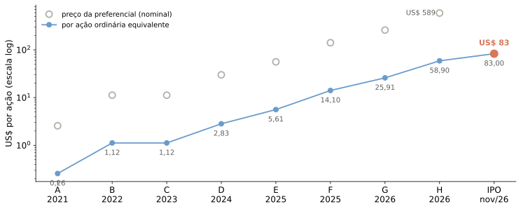
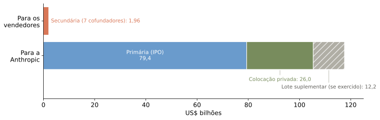
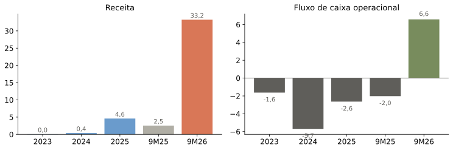
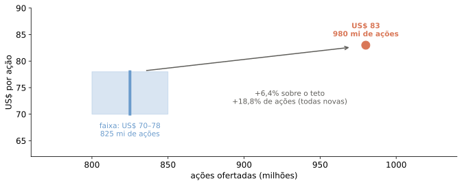
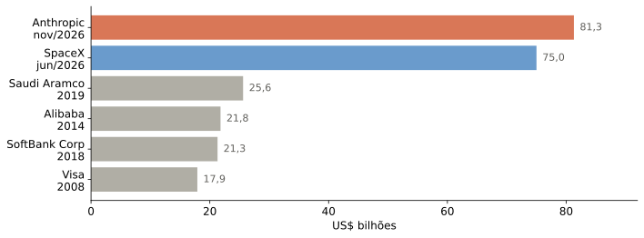
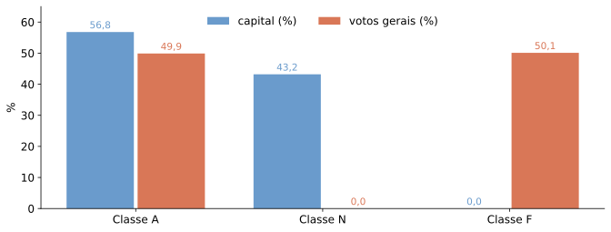

Complemento à Aula 17
18/11/2026: a Anthropic vende 980 milhões de ações a US$ 83.
US$ 81 bilhões na oferta, mais US$ 26 bilhões em colocação privada.
Cada pedaço da Aula 17 aparece com números reais:
Fontes principais: S-1/A de 17/11/2026 (SEC) e comunicado de precificação de 18/11/2026.

Lição: compare preços por unidade de direito econômico, não por papel com nome diferente.
| Rodada | Data | Captação | Post-money |
|---|---|---|---|
| Série E | mar/2025 | US$ 3,5 bi | US$ 61,5 bi |
| Série F | set/2025 | US$ 13 bi | US$ 183 bi |
| Série G | fev/2026 | US$ 30 bi | US$ 380 bi |
| Série H | mai/2026 | US$ 65 bi | US$ 965 bi |
| IPO | nov/2026 | US$ 81 bi + 26 bi | ≈ US$ 1,5 tri (diluído) |
Fontes: anúncios das rodadas pela Anthropic; CNBC (18/11/2026) para o IPO.
| Componente | Ações | Valor a US$ 83 |
|---|---|---|
| Primária: ações novas | 956,35 mi | US$ 79,38 bi |
| Secundária: cofundadores | 23,65 mi | US$ 1,96 bi |
| Total da oferta | 980 mi | US$ 81,34 bi |
| Lote suplementar (opção, 30 dias) | até 147 mi | até US$ 12,20 bi |
| Colocação privada, Classe N | ≈ 313 mi | US$ 26,0 bi |
Fontes: comunicado de 18/11/2026; S-1/A. Ações da colocação: 26 bi / 83 (cálculo nosso).

97,6% da oferta é primária: o IPO aqui é captação, não saída de investidores.
| Vendedor | Ações |
|---|---|
| Dario Amodei | 3.378.378 |
| Daniela Amodei | 3.378.378 |
| Tom Brown | 3.378.378 |
| Jack Clark | 3.378.378 |
| Jared Kaplan | 3.378.378 |
| Sam McCandlish | 3.378.378 |
| Chris Olah | 3.378.378 |
Fonte: S-1/A, Principal and Selling Stockholders.

Fonte: S-1/A, demonstrações financeiras.

A demanda mexeu no preço e na quantidade: a empresa escolhe quanto captar, não só a que preço.
Pergunta: Hastings pode receber só US$ 100 mi? Pode não receber nada?
Investidor → bancos
Bancos → Anthropic
O banco assume risco próprio, mas só depois de ver o livro de ordens. Fonte: S-1/A, seção Underwriting.
Previsão para hoje: retorno positivo no 1º dia. Vamos conferir.

Com o lote exercido, a SpaceX chegou a ≈ US$ 86 bi; a Anthropic passa disso só se os bancos exercerem o seu.
| Classe | Quem tem | Direitos econômicos | Voto |
|---|---|---|---|
| A | público, investidores antigos | sim, pro rata | 1 por ação (49,9% do total) |
| N | Amazon, Google, parceiros | iguais à A | nenhum |
| F | LLC dos 7 cofundadores | nenhum | 50,1% fixos |
| T | Long-Term Benefit Trust | nenhum | elege a maioria do conselho |
Fonte: S-1/A, Description of Capital Stock. A Anthropic é uma public benefit corporation de Delaware.

Amazon (14,7%) e Google (13,7%) têm muito capital e nenhum voto.
| Decisão | Quem ganha | Como |
|---|---|---|
| Captar | a firma | US$ 79 bi primária + 26 bi colocação |
| Liquidez | cofundadores | US$ 1,96 bi na secundária |
| Controle | cofundadores e trust | Classe F (50,1%) e Classe T (conselho) |
Três decisões que a Aula 17 tratou juntas aparecem aqui separadas.
O guia de estudo diz onde ler cada tópico da Aula 17, que este caso complementa.